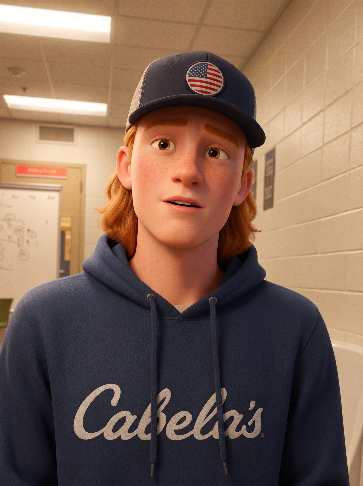

Jack's
To-Dos
Five things to take the series across the finish line: build the last student videos, give every kid a matching end card, and make sure not a single rider is missing. The how-to and the Claude skills do the heavy lifting — work the list top to bottom.

Build the three new videos
Three new student clips were added to Kapwing → City of Batavia → e-mobility kid vids. Build full videos from them, the same way as the rest of the series.
- The three new kids are Emma, Bri, and Sammi. Pull each clip from the Kapwing folder above.
- Build each video to match the existing series — same structure, pacing, and treatment as the videos already shipped.
- Each of these three also needs a Pixar character + end card (covered in Task 4) burned in before it's done.
Rename every video to the real name
All videos should be named after the student in them — no episode numbers or working titles.
- Go through every video and rename it to the kid's real name (check the cast list below if you're unsure of spelling — Sammy vs. Sammi, Bri, etc.).
- Keep names consistent with the end-card and character filenames (e.g. hadley, levi) so everything lines up.
Swap in the three refreshed end cards
New end cards were generated for three kids who already have videos. Drop the new ones into their videos, replacing the old cards.
- Update Levi, Sammy, and Tyler with the new cards:
- /generated_imgs/end-card-levi.png
- /generated_imgs/end-card-sammy.png
- /generated_imgs/end-card-tyler.png
- Confirm the new card actually replaced the old one in each video — watch the ending, don't just trust the file swap.
Make characters + cards for everyone else, then install them
Every remaining kid needs a Pixar character and an end card generated, then burned into their video. Use the two Claude skills — see the end-card how-to.
- For each remaining kid: pixar-character from a screenshot, then cta-card using the video transcript (Claude writes the polaroid line and picks the ordinance tip — you pick the side character + pose).
- Remaining kids: Crew, Benny, Alyssa, Vanessa, Chanel, Colin, Cora, Janaya, Etta — plus Emma, Bri, Sammi from Task 1.
- Install each finished end card into that kid's video.
- Already done — leave alone unless they need a refresh: Hadley, Johnny (and Levi / Sammy / Tyler are handled in Task 3).
Triple-check everything
Final QC pass. Every video should be complete and as perfect as you can make it, with no kid missing.
- Watch every video start to finish — the right kid, the right end card, named correctly, ending plays clean.
- Confirm there is a finished video for every single kid on the cast list below — none skipped.
- Check the end cards against the bar in the how-to: likeness right, CTA reads bataviail.gov →, side-character pose varied, River female.
- Fix anything that's off before handing it over. Deliver the whole set as complete as possible — Gary reviews last, not mid-way.
The whole cast — nobody gets skipped
All 17 riders. Every one needs a finished, named video with its end card by the time you're done.
- Hadley
- Johnny
- Levi
- Sammy
- Tyler
- Emma
- Bri
- Sammi
- Crew
- Benny
- Alyssa
- Vanessa
- Chanel
- Colin
- Cora
- Janaya
- Etta
Definition of done
- A video exists for all 17 kids.
- Each video is named after the student.
- The right end card is burned into each video.
- Levi, Sammy, Tyler use the refreshed cards.
- Emma, Bri, Sammi videos are built and finished.
- Every card passes the how-to quality bar.
- You watched each one end to end.
- It's ready for Gary to review as final.